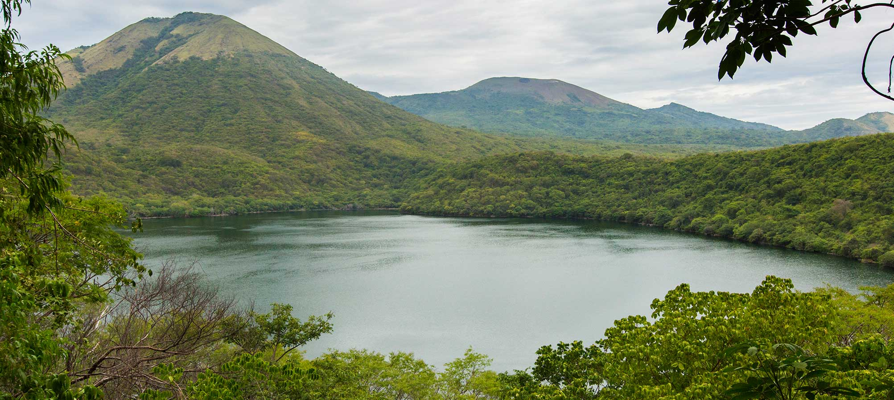

La belleza natural de Nicaragua desde sus miradores
Nicaragua, tierra de volcanes, lagos y montañas, ofrece una diversidad de paisajes que cautivan tanto a locales como a visitantes. Desde las alturas de El Crucero hasta las aguas tranquilas de Asososca y las formaciones rocosas del Cañón de Somoto, el país revela escenarios que combinan majestuosidad natural con experiencias sensoriales únicas.
El Mirador Puerta al Cielo, enclavado en las montañas de El Crucero, regala vistas celestiales donde las nubes parecen tocar la tierra. Es un refugio visual y emocional, ideal para quienes buscan paz y contemplación. Más al norte, el Cañón de Somoto se abre como una grieta ancestral, tallada por el río Coco, revelando un paisaje de roca, agua y aventura. Y en el occidente, la Laguna de Asososca, escondida en un cráter volcánico extinto, ofrece un remanso de serenidad rodeado de vegetación, perfecto para desconectarse del ruido y reconectar con lo esencial.
Estos tres miradores no solo representan la riqueza geográfica de Nicaragua, sino también su capacidad de inspirar, asombrar y conectar al ser humano con la fuerza de la naturaleza. Son ventanas abiertas a lo sublime, donde cada vista cuenta una historia y cada brisa lleva el alma de la tierra.
🌄 Mirador Puerta al Cielo (El Batallón), El Crucero
📍 Ubicación: XMRQ+R2P, El Crucero, Managua
🏞️ Tipo: Cafetería con mirador
🕒 Horario: Abre sábados a las 11 a.m.
⭐ Calificación: 4.3 (58 reseñas)
✨ Lo especial: Este mirador combina vistas espectaculares con un ambiente acogedor. Desde aquí puedes contemplar un mar de nubes que cubre los valles de El Crucero, especialmente al amanecer o al atardecer. La cafetería ofrece un espacio ideal para disfrutar de la vista con una bebida caliente, lo que lo convierte en un destino perfecto para escapadas románticas o momentos de reflexión.

🐅 Laguna de Asososca (también conocida como Laguna del Tigre)
📍 Ubicación: Al noroeste del municipio de La Paz Centro, departamento de León
🌋 Origen: Cráter volcánico extinto
🏞️ Lo especial: Es una laguna poco frecuentada, lo que la convierte en un sitio perfecto para quienes buscan paz, seguridad y conexión con la naturaleza. Sus aguas son cristalinas y rodeadas de vegetación.

🏞️ Mirador del Cañón de Somoto
📍 Ubicación: Somoto, Madriz
🌊 Lo especial: Este mirador ofrece vistas espectaculares del cañón y del río Coco, el más largo de Centroamérica. Las paredes rocosas y las aguas cristalinas crean un paisaje de ensueño.
🚣 Actividades: Senderismo, paseos en bote y natación. Ideal para los amantes de la aventura y la geología.